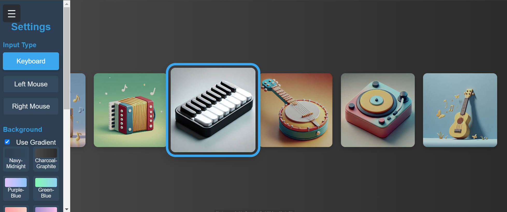
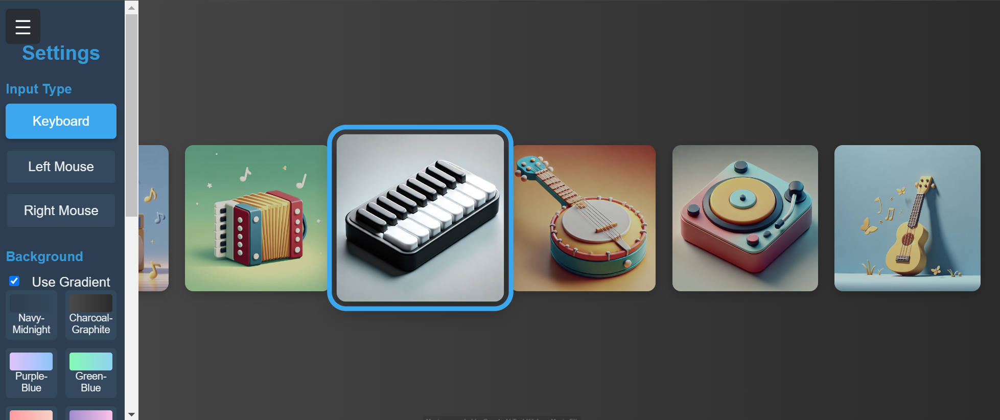
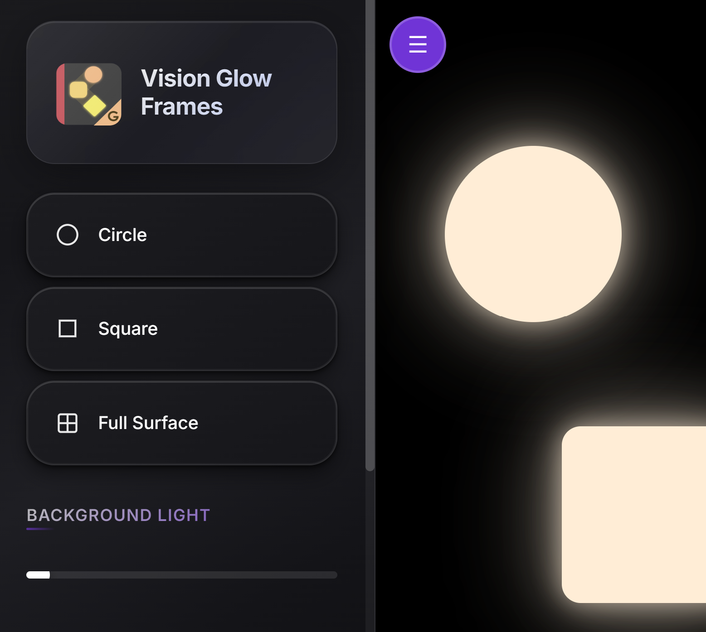
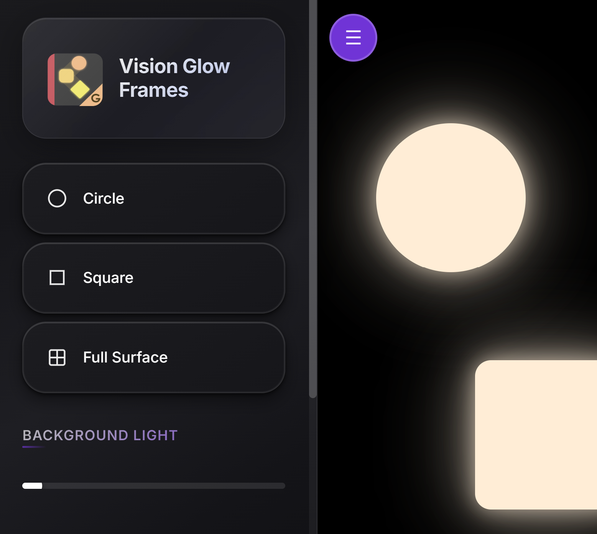

Parent Resources
A collection of apps and tools for parents to use with their children
Literacy Tools
Tools to support literacy development and reading comprehension


- Literacy
- Visual Learning
- Comparative Language
Salient Feature Highlighting (SFH)
A tool for building concepts about pictures by comparing images. The app features two panels that support parents in having conversations that compare pictures, helping to highlight key features (salient features) and discuss similarities and differences between images.


- ⚠️ Experimental
- Literacy
- Touch Target
- Audio Stories
- Local AI
- Auditory Cues
- Haptic Cues
Story Tap
An auditory learning tool for listening to stories. Parents can process their own personalised 5-10 sentence stories into an audio book or voice output tool for their child. The app is designed for auditory learning—children can tap through story pages independently like a cause and effect toy, listening as it reads the book in high-quality audio. The app processes everything on your phone or tablet, never sending anything off your device, and it's free—this has only become possible in recent months. The caveat is it may take up to 15-45 minutes on some phones to initially process the story. When that is done, it can be played over and over. The app has a host of visual access options, as well as auditory and haptic cues.
Runs on the free, open source community project Kokoro TTS.
3D Printed Switch
A 3D-printable access tool for single switch interaction


- Hardware
- 3D Printing
The Alligator Switch
The Alligator Switch is a 3D-printable access tool designed to support individuals with unique movement patterns. Its low-profile, contoured shape allows it to be positioned at various angles under a user's hand to find the most ergonomic fit, while the activation mechanism requires minimal movement.
This print-in-place design is printed as a single unit. With the addition of a tactile switch and a cord, the entire assembly consists of only three parts. This project is ideal for makers with moderate 3D printing experience and basic soldering skills.
▶ üõ†Ô∏è Build Specifications & Materials
- Material: PETG – Recommended for its durability. PLA is more prone to cracking under the repeated pressure applied to the hinges.
- Print Orientation: Upright – Position with hinges on the base so print lines orbit the hinges rather than passing through them for maximum strength.
- Tactile Switch: Omron B3F-4055 (or similar) – Chosen for its specific push-back force. Note: If using a different switch, you may need to adjust the base tolerances.
- Cord: 3.5mm Male Mono Jack – Or a 3.5mm mono plug cord/patch cable to allow for adjustable lengths.
- Adhesive: Hot Glue – Used to secure the switch and the cable in its channel.
▶ üìñ Assembly & Pro-Tips
Switch Placement: Use tweezers to carefully pry the switch open and place it inside. A small bead of hot glue on the bottom of the switch can help raise it by a millimeter to achieve the perfect activation feel.
Testing & Adjustment: Always test the tactile switch activation before gluing. The design intentionally leaves some space for builders to dial in the perfect activation feel. If needed (and only if needed), a bead of hot glue or a small shim can boost the switch up by a millimeter or two.
Usage: When positioned correctly, the user can rest their hand gently on the switch, and a small movement will activate it.
Feedback: When calibrated correctly, the switch provides a highly satisfying tactile and auditory "click."
Safety Note
All single switches pose a potential choking hazard due to the cord or risk of breakage. This device should be used under supervision with children or any individual at risk of placing small parts in their mouth.
Single Tap Screen Apps
Especially designed to detect light touch on a touch screen device, but can also be activated by single switch access


- Touch Target
- Visual Patterns
Sensory Tap
A large colourful touch point on the screen for children to target, creating colourful patterns as feedback on their actions.


- Touch Target
- Voice Output
- Auditory Cues
- Haptic Cues
Touch Deck
A customisable large button app with up to 4 colourful buttons that can speak phrases or play recorded audio when tapped. Buttons can be repositioned, resized, and colour-coded. Each button supports up to 3 rotating phrases with text-to-speech or your own voice recordings. Includes haptic and auditory feedback options, activation cooldown settings, and full-screen mode. Perfect for simple communication, choice-making, or as a cause and effect activity.
Single Switch Apps
Engaging cause-and-effect applications for single switch users

- Cause and Effect
Cause and Effect Fireworks
An interactive app designed to create visual fireworks effects in response to adapted single switch activation.
- Cause and Effect
Cause and Effect Ball Drop
An app that provides calming, colorful balls that respond to single switch inputs.
- Cause and Effect
AstroBounce
A sensory app where users activate a visual sensory experience using a single switch.
 

- Music
HarmonyHopper
A music scanning toy controlled by an adapted single switch.
Light Box App
Turn your phone or tablet into a light box
 

- Assistive Devices
GlowFrames
An app for making a tablet or phone into a light box. Illuminated shapes can be arranged to illuminate translucent materials.
Gaze Tracking Canvas
Visual target management for gaze tracking devices

- Gaze Tracking
- V2
GazeCanvas v2
Version 2 of GazeCanvas is an image canvas designed to be efficiently manage visual targets like images, video, shapes and text for use with a gaze tracking device overlay. Animation can be applied to the targets and triggered by pressing the numbers on a standard keyboard. This requires a gaze tracking device with its own overlay software.
Key Features:
- Media Library
- Fast image loading
- Auto-Load Folders
- Include Movement
- Add Text
- Quick Background Colours
- Foreground and Background Images
- Create Complexity Images
Note: This app is designed for rapid setup and experimentation. It does not save arrays between sessions.